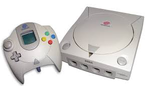

Los videojuegos en línea son aquellos videojuegos jugados vía Internet independientemente de la plataforma. Puede tratarse de videojuegos multijugador, en los que se juega con otras personas o videojuegos de navegador que se descargan desde la web y se ejecutan en el navegador.
La verdadera revolución de los juegos en red surgió en 1993 con la creación de la World Wide Web (WWW). Los usuarios tenían la posibilidad de acceder gratuitamente a versiones reducidas de videojuegos para ordenador con fines básicamente promocionales, como es el caso de la primera entrega del Doom. Además la rápida difusión de Internet como medio de entretenimiento facilitó la mejora de las tecnologías para la conexión en red de usuarios y su acercamiento a la sociedad.

Es importante destacar también el auge de las videoconsolas que, desde principios de la década de los 90, sirven de entretenimiento tanto a niños como a mayores. La primera consola que incorporó la posibilidad de conexión a Internet para jugar en red fue Dreamcast, que se lanzó en Japón en 1998. A partir de ella las consolas más importantes (incluidas portátiles como Nintendo DS o PlayStation Portable) empezaron a ofrecer la posibilidad de ser conectadas a Internet. Considerado como un antecedente más que nada, no era posible jugar en línea con otras personas, pero podías subir tus puntuaciones de algún juego a la Web, así como obtener fases o niveles de videojuegos de SNES, únicamente con este sistema con el nombre de Satellaview.
El Satellaview fue un satmódem que se añadía a la consola de Nintendo Super Nintendo que fue lanzado únicamente en Japón.
Entre los juegos multijugador actuales pueden hallarse varios tipos empezando por los convencionales que son adaptaciones de juegos con una temática ya definida como: Need For Speed, Half Life, Soldier of Fortune, Call of Duty, Battlefield, Far Cry, Halo, etc. Mientras otros son lanzados solo para el juego en línea o con bots (jugadores controlados por la computadora) como: Counter Strike…

Pantalla dividida
En un mismo soporte dos o más jugadores juegan al mismo tiempo, pero la pantalla se divide en dos o más partes de manera que existe independencia de las acciones entre los usuarios en lo que respecta a moverse por los escenarios del videojuego (por ejemplo: Gran Turismo 2 o Mario Kart 64). Se solapan 2 imágenes distintas (correspondiente a cada jugador) y utilizando la alta frecuencia de parpadeo, cada jugador percibe por sus gafas una imagen distinta.